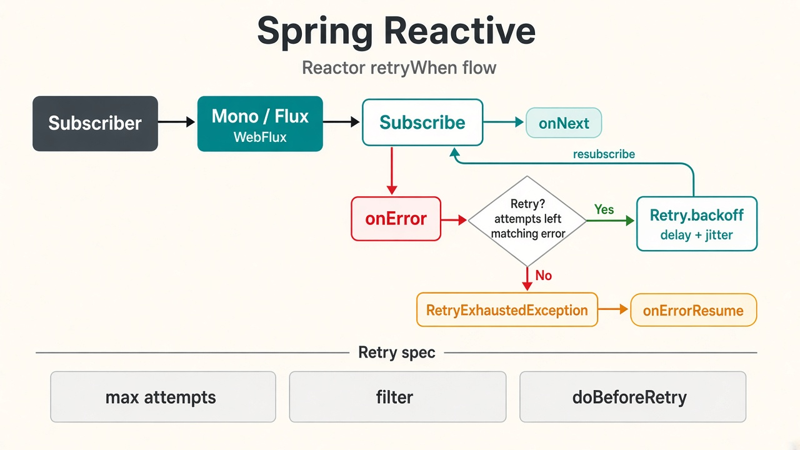

This document contains retry logic strategy using Spring Reactive (Project Reactor).
Built-in native retry mechanisms for Spring WebFlux / Project Reactor using the fluent Retry API on Mono or Flux.
import reactor.core.publisher.Mono;
import reactor.util.retry.Retry;
import java.time.Duration;
public class ReactiveRetryService {
// 1. Exponential Backoff with Max Attempts
public Mono<String> getDataWithBackoff(Mono<String> source) {
return source
.retryWhen(Retry.backoff(3, Duration.ofMillis(500))
.doBeforeRetry(retrySignal ->
System.out.printf("Retrying attempt %d due to: %s%n",
retrySignal.totalRetries() + 1,
retrySignal.failure().getMessage())
)
);
}
// 2. Conditional Retry (Only retry for specific exceptions)
public Mono<String> getDataOnlyForNetworkErrors(Mono<String> source) {
return source
.retryWhen(Retry.fixedDelay(3, Duration.ofMillis(200))
.filter(throwable -> throwable instanceof IllegalStateException) // Only retry if true
.onRetryExhaustedThrow((retryBackoffSpec, retrySignal) -> {
return new RuntimeException("Retries exhausted!", retrySignal.failure());
})
);
}
}
Retry.backoff(maxAttempts, minBackoff): Automatically applies an exponential backoff algorithm with optional jitter.Retry.fixedDelay(maxAttempts, delay): Retries the upstream publisher at a constant interval..filter(Predicate): Ensures that system errors fail immediately without consuming retry attempts, targeting only transient errors..doBeforeRetry(): A side-effect operator perfect for logging metrics, checking statuses, or counting failures.Project Reactor’s Retry API gives Spring WebFlux applications a concise, non-blocking way to handle transient failures. Prefer Retry.backoff when load and contention matter, and Retry.fixedDelay when a steady interval is enough. Always filter retries to transient errors so permanent failures fail fast, and use doBeforeRetry (or similar hooks) for observability. Used this way, retries improve resilience without masking real defects or amplifying load.